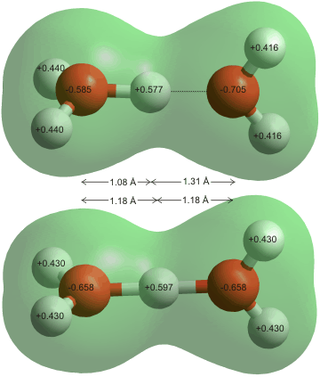

<!DOCTYPE html PUBLIC "-//W3C//DTD XHTML 1.0 Transitional//EN" "http://www.w3.org/TR/xhtml1/DTD/xhtml1-transitional.dtd">
<html xmlns="http://www.w3.org/1999/xhtml">
<head>
<meta http-equiv="Content-Type" content="text/html; charset=iso-8859-1" />
<meta http-equiv="Content-Style-Type" content="text/css" />
<meta http-equiv="Content-Script-Type" content="text/javascript" />
<meta http-equiv="Content-Language" content="en-us" />
<meta name="Description" content="Hydrogen ions" />
<meta name="Keywords" content="hydrogen ions,oxonium,hydronium" />
<meta name="author" content="martin chaplin: martin.chaplin@btinternet.com" />

<title>Hydrogen ions</title>
<script language="javascript" type="text/javascript" src="head.js"></script>
</head>
<noscript>
Your browser does not support JavaScript!
</noscript>
<head>
<link rel="shortcut icon" href="favicon.ico" type="image/x-icon" />
<link rel="ToC" href="water_structure_science.html" />
<link rel="stylesheet" href="water.css" type="text/css" />

</head>
<body onload="mm_preloadImages('images/seab1.gif','images/seab3.gif','images/seab4.gif','images/top2.gif', 'images/top3.gif')">
<a name="top" id="top"></a>
<div style="width:761px; height:93px; background-color:#006868;padding-top:3px;border:0px;margin:0px;">
  <div style="padding:0px;border:0px;margin:0px;padding-left:3px;width:140px; height:22px; background-color:#006868; float:left; display:inline;">
    <form class="quicklinkform" action="hydrogen_ions.html">
      <label for="&rdquo;menu1&rdquo;"></label>
      <select class="quicklink"
            onchange="mm_jumpMenu('parent',this,0)" name="menu1" id="&rdquo;menu1&rdquo;">
       <option  value="index.html" selected="selected">Quick links</option>
        <option value="index.html">......................................</option>
        <option value="water_molecule.html">Water molecule</option>
        <option value="water_hydrogen_bonding.html">hydrogen-bonding</option>
        <option value="water_phase_diagram.html">Phase diagram</option>
        <option value="water_vibrational_spectrum.html">Water spectrum</option>
        <option value="water_dissociation.html">Dissociation</option>
        <option value="water_anomalies.html">Anomalies</option>
        <option value="water_properties.html">Water properties</option>
        <option value="index.html">......................................</option>
        <option value="clusters_overview.html">Water clusters</option>
        <option value="protein_hydration.html">Protein hydration</option>
        <option value="hydrocolloids_gums.html">Hydrocolloids</option>
        <option value="ion_hydration.html">Ions</option>
        <option value="index.html">......................................</option>
        <option value="water_structure_science.html">Table of Contents</option>
        <option value="water_sitemap.html">Site map</option>
</select>
</form>
</div>
  <div style="padding:0px;border:0px;margin:0px; height:22px; background-color:#006868; float:left; display:inline;"><a href="search.html" onmouseout="mm_swapImgRestore()" onmouseover="mm_swapImage('search','','images/seab1.gif',1)"></a><a href="water_sitemap.html"></a><a href="https://water.lsbu.ac.uk/php-cgiwrap/water/pfp.php3?page=http://water.lsbu.ac.uk/water/hydrogen_ions.html" onmouseout="mm_swapImgRestore()" onmouseover="mm_swapImage('printer','','images/seab4.gif',1)"  ></a><a href="add1.html"></a></div>
  <map name="topmap" id="topmap">
    <area shape="poly" coords="322,42,429,42,429,61,322,61" href="martin_chaplin.html" title="Go to my page" alt="Go to my page" onmouseout="mm_swapImgRestore()" onmouseover="mm_swapImage('topi','','images/top3.gif',1)"  />
      <area shape="poly" coords="553,3,554,30,693,30,717,8,747,32,717,56,690,33,204,35,204,3" href="water_structure_science.html" title="Go to Water Structure and Science site contents" alt="Water Structure and Science" onmouseout="mm_swapImgRestore()" onmouseover="mm_swapImage('topi','','images/top2.gif',1)" />
</map>
  <div style="padding:0px;border:0px; margin-left:3px; width:755px; background-color:#006868;"></div>
</div>
<div style="width:761px; background-color:#006868;padding:0px;border:0px;margin:0px;">
  <div style="width:751px; background-image:url('images/bg.gif');margin-left:3px;padding-left:4px;border:0px;padding-top:0px;padding-bottom:0px; background-color:#FFFae2;">
    <!-- print begin -->
    <figure  class="floatright">
<figcaption>
      <p align="center">&nbsp;</p>
      <p align="center">Hydrogen ion  (H<sub>3</sub>O<sup>+</sup>) as a partially flattened pyramid</p>
      <p align="center">&nbsp;</p>
</figcaption> 
</figure>
<h1> Hydrogen ions&nbsp; &nbsp;&nbsp;&nbsp;&nbsp;&nbsp;&nbsp;&nbsp;&nbsp;&nbsp;&nbsp;</h1>
    <p>Hydrogen ions are molecular ions with the formula H<sub>3</sub>O<sup>+</sup>(H<sub>2</sub>O)<sub>n</sub>, formed by  adding a proton to one or more water molecules.</p>
    <p>&nbsp;</p>
    <p class="style16"><a href="water_dissociation.html#prod"> The ionic product,  K<sub>w</sub></a></p>
    <p class="style16"> <a href="water_dissociation.html#pH">pH</a><br />
      <a href="ionisoh.html"> Hydroxide ions</a><br />
      <a href="grotthuss.html"> Grotthuss mechanism</a></p>
    <p>&nbsp;</p>
    <p align="left">The structure and dynamics of the hydrogen ion in liquid water and the gas phase have been reviewed [<a title="go to cited reference" href="ref27.html#r2628" name="r2628" id="r2628">2628</a>]. The bare hydrogen ion (a proton) has an extremely high charge density (&asymp; 2 &#739; 10<sup>10</sup> that of Na<sup>+</sup>), readily hydrates,<sup><a title="click for an explanation" href="hydrogen_ions.html#f"> f</a><a name="bf" id="bf"></a></sup> and cannot exist freely in solution. Initial hydration forms the hydroxonium ion (H<sub>3</sub>O<sup>+</sup>)  (commonly called the hydrogen ion and isoelectronic with ammonia, NH<sub>3</sub>).<sup><a title="click for an explanation" href="hydrogen_ions.html#d"> d</a><a name="bd" id="bd"></a></sup> This has a flattened 
      trigonal pyramidal structure (with calculated gas-phase 
      values of O-H bond length 0.961 <a href="constants.html#ang" title="Angstrom">&Aring;</a>, H-O-H angle 114.7&deg;;<sup><a title="click for an explanation" href="hydrogen_ions.html#e"> e</a><a name="be" id="be"></a></sup> this may be compared with the significantly different calculated liquid values of O-H bond length 1.002 <a href="constants.html#ang" title="Angstrom">&Aring;</a>, 
      H-O-H angle 106.7&deg;  [<a title="go to cited reference" href="ref8.html#r709">709</a><a name="r709" id="r709"></a>]) with <em>C</em><sub>3<em>v</em></sub> symmetry and equivalent protons. H<sub>3</sub>O<sup>+</sup> has an effective ionic radius of 0.100 nm [<a title="go to cited reference" href="ref20.html#r1946">1946</a><a name="r1946" id="r1946"></a>], somewhat less than that of the H<sub>2</sub>O molecular radius (0.138 nm). Its molar volume is -5.4 cm<sup>3</sup> &#739; mol<sup>&minus;1</sup> due to electrostriction [<a title="go to cited reference" href="ref20.html#r1946">1946</a>]. It forms the core of the 'Eigen' (H<sub>9</sub>O<sub>4</sub><sup>+</sup>) cation and the wings of the 'Zundel' (H<sub>5</sub>O<sub>2</sub><sup>+</sup>) cation,<sup><a title="click for an explanation" href="hydrogen_ions.html#a">a</a><a name="ba" id="ba"></a></sup> <a href="hydrogen_ions.html#eigen">described later</a>. The protons' hydration structuring is dynamic and complex due to their ultrafast hydrogen-bonded fluctuations  together with the low energy barriers separating the different proton hydration configurations.<a name="invert" id="invert"></a> The X-ray absorption of isolated H<sub>3</sub>O<sup>+</sup> cations have been reported at the O 1s edge [<a title="go to cited reference" href="ref46.html#r4501">4501</a><a name="r4501" id="r4501"></a>], with H<sub>2</sub>O<sup>+</sup> cations analyzed for comparison.</p>
   
    <figure  class="floatleft">
<figcaption>
      <p align="center">&nbsp;</p>
      <p align="center">The energy of inversion for H<sub>3</sub>O<sup>+</sup>, from [<a title="go to cited reference" href="ref24.html#r2362">2362</a>]</p>
      <p align="center">&nbsp;</p>
</figcaption> 
</figure>
    <p>&nbsp;</p>
    <p>The H<sub>3</sub>O<sup>+</sup> structure can invert (like a wind-blown umbrella, see also <a href="aqueous_ammonia.html">aqueous ammonia</a>) 
      with  less activation energy than that of a hydrogen 
      bond [<a title="go to cited reference" href="ref24.html#r2362">2362</a><a name="r2362" id="r2362"></a>]. This may occur as an alternative, or even preferred, 
      pathway to rotation within  dynamic hydrogen-bonded 
      clusters.
      This (hindered) umbrella motion of H<sub>3</sub>O<sup>+</sup> has a broad absorption band centered at ~1337 cm<sup>&minus;1</sup> [<a title="go to cited reference" href="ref37.html#r3636">3636</a><a name="r3636" id="r3636"></a>].</p>
      <p>&nbsp;</p>
    <p align="left">H<sub>3</sub>O<sup>+ </sup>is also found in 
      the monohydrates of HCl, H<sub>2</sub>SO<sub>4</sub>and 
      HClO<sub>4</sub>, for example, [H<sub>3</sub>O<sup>+</sup>]<sub>2</sub>[SO<sub>4</sub><sup>2&minus;</sup>].<sup><a title="click for an explanation" href="hydrogen_ions.html#b">b</a><a name="bb" id="bb"></a></sup> All the  occupied molecular 
      orbitals of H<sub>3</sub>O<sup>+</sup>are on <a title="go to see them" href="ions_orbitals.html">another page</a>. All hydrogen ions are formed from a 'core' H<sub>3</sub>O<sup>+</sup>. They are not fixed structures in aqueous solution but exist as 'flickering' clusters, as with other <a href="clusters_overview.html">water clusters</a>, with  continuously coming and going. Hydrogen-bonding water molecules. The   lifetimes of the clusters are independent of the lifetime of individual linkages. However, the energy differences between different cluster types   in aqueous solution are slight, and interconversions take place rapidly.</p>
    <p align="left">&nbsp;</p>
   
    <div style=" float:none; clear:both;"></div>
      <p align="left">It has been shown that H<sub>3</sub>O<sup>+</sup> can donate three hydrogen bonds (but accepts almost none); the strength of these donated hydrogen bonds being over twice as strong as those between H<sub>2</sub>O molecules in bulk water [<a title="go to cited reference" href="ref12.html#r1198">1198</a><a name="r1198" id="r1198"></a>]. A recent study of lone pairs shows that the hydronium ion does not possess the expected lone pair (see <a href="ions_orbitals.html">the 3a<sub>1</sub> <abbr title="Highest Occupied Molecular Orbital">HOMO</abbr></a>). These electrons are spread out over the three protons, and there is no minimum in the electrostatic potential in the expected place  [<a href="ref22.html#r2137" name="r2137" title="go to cited reference" id="r2137">2137</a>]. This effectively means that the H<sub>3</sub>O<sup>+</sup> cation can be considered as H<sub>9</sub>O<sub>4</sub><sup>+</sup> in solution. The polarization causes these first shell water molecules to  each donate two further hydrogen bonds (but also accept little), with strengths still somewhat higher than bulk water [<a title="go to cited reference" href="ref12.html#r1198">1198</a>]. Second-shell water molecules also donate two hydrogen bonds (but  accept only one with a relatively weak hydrogen bond) with strengths still fractionally  higher than bulk water [<a title="go to cited reference" href="ref12.html#r1198">1198</a>]. The bias towards donated hydrogen bonds, within the  two-shell H<sub>21</sub>O<sub>10</sub><sup>+</sup> ion cluster, requires that  a zone of broken hydrogen bonds surrounds it.  This is confirmed by infrared spectra that show that the presence of an H<sub>3</sub>O<sup>+</sup> ion extends to affect the hydrogen-bonding of at least 1one hundred surrounding water molecules [<a title="go to cited reference" href="ref13.html#r1246">1246</a><a name="r1246" id="r1246"></a>]. </p>

    <div style=" float:none; clear:both;">
      <figure  class="floatleft">
<figcaption>
      <p align="center">&nbsp;</p>
      <p align="center">H<sub>5</sub>O<sub>2</sub><sup>+</sup> showing the unequally spaced hydrogen bond (above) </p>
      <p align="center">and equally-spaced hydrogen bond in the C2  form (bottom)</p>
      <p align="center">&nbsp;</p>
</figcaption>
      </figure>
      <p>&nbsp;</p>
      <p><a name="h5o2" id="h5o2"></a>The hydroxonium ion binds strongly to another water molecule in two possible manners (in a vacuum). Opposite are shown  
        the two  H<sub>5</sub>O<sub>2</sub><sup>+</sup> dihydronium ions with closely matched energies, where the proton is asymmetrically (top) or symmetrically (bottom) centered between the O-atoms.<sup><a title="click for an explanation" href="hydrogen_ions.html#e"> e</a><a name="be2" id="be2"></a></sup> <a name="lenghth5o2" id="lenghth5o2"></a></p>
      <p>&nbsp;</p>
       <figure  class="floatright">
<figcaption>
      <p align="center">&nbsp;</p>
      <p align="center"> H<sub>5</sub>O<sub>2</sub><sup>+</sup> Energy diagram and the zero-point vibrational energies </p>
      <p align="center">&nbsp;</p>
</figcaption> 
</figure>
      <p>&nbsp;</p>
      <p>&nbsp;</p>
      <p>&nbsp;</p>
      <p>&nbsp;</p>
      <p>&nbsp;</p>
      <p>&nbsp;</p>
      <p>&nbsp;</p>
      <p>&nbsp;</p>
      <p>&nbsp;</p>
      <p>&nbsp;</p>
      <p>&nbsp;</p>
      <p>&nbsp;</p>
      <p>&nbsp;</p>
      <p>&nbsp;</p>
      <p>&nbsp;</p>
      <p>The potential energy barrier (&asymp;  2 k<a href="constants.html#J" title="joule">J</a> &#739; mol<sup>&minus;1</sup>) for the proton switching from asymmetrically positioned water molecules (see above right) is very low compared with the vibrational energy of the proton (shown blue). The asymmetric structure  (top left) of H<sub>5</sub>O<sub>2</sub><sup>+</sup> is found to be more stable using 
        the <a href="h2o_orbitals.html#b" title="go for more information" >6-31G**</a> basis set. It has a strong hydrogen bond (159 kJ  &#739; mol<sup>&minus;1</sup>) that reduces to -69 kJ  &#739; mol<sup>&minus;1</sup> when stretched to 0.244  nm and -20 kJ  &#739; mol<sup>&minus;1</sup> at 0.431  nm [<a href="ref30.html#r2957" name="r2957" title="go to cited reference" id="r2957">2957</a>].</p>
      <p>&nbsp;</p>     
      <figure  class="floatright">
<figcaption>
      <p align="center">&nbsp;</p>
      <p align="center">The Zundel cation H<sub>5</sub>O<sub>2</sub><sup>+</sup> in acetonitrile solution</p>
      <p align="center">&nbsp;</p>
</figcaption> 
 </figure>
<p>However, other more thorough <em>ab 
        initio</em> treatments have found the symmetric hydrogen-bonded 
        structure (above bottom), with a slightly shorter hydrogen bond, to be the global minimum of by about 0.6 
        kJ  &#739; mol<sup>&minus;1</sup> [<a title="go to cited reference" href="ref2.html#r118">118</a>]. In this symmetric form (the 'Zundel' cation, shown right, lifetime &asymp; 0.5 ps  [<a href="ref25.html#r2440" name="r2440" title="go to cited reference" id="r2440">2440</a>]), all O-H bonds are the same length (0.95 <a href="constants.html#ang" title="Angstrom">&Aring;</a>) 
        except the two involved in the hydrogen bond, which are covalent and equally-spaced 
        (1.18 <a href="constants.html#ang" title="Angstrom">&Aring;</a>; similar to that in <a href="water_phase_diagram.html" title="go to a description of water's phases">ice-ten</a>, 
        and as found by neutron diffraction in some crystals midway between the oxygen atoms [<a href="ref2.html#r118" name="r118" title="go to cited reference" id="r118">118a</a>], such as the dihydrates of HCl and HClO<sub>4</sub>, for example, [H<sub>5</sub>O<sub>2</sub><sup>+</sup>][ClO<sub>4<sup>&minus;</sup></sub>]). There is localized but low 
        electron density around the central hydrogen atom.       The vibrational 
        spectrum of H<sub>5</sub>O<sub>2</sub><sup>+</sup> shows 
        a strong, sharp peak (at 1090 cm<sup>&minus;1</sup>) for its shared 
        proton similar to <a title=" go for more information" href="ionisoh.html#vibr">H<sub>3</sub>O<sub>2</sub><sup>&minus;</sup></a>. As expected, these spectra are much broadened, 
        shifted, and poorly resolved in bulk liquid water (see <a href="water_vibrational_spectrum.html#zundel">spectrum</a>). This broadened proton stretching vibration of Zundel-like configurations has a similar frequency to  the umbrella motion of Eigen-like configurations, with both resonant at &sim;1200 cm<sup>&minus;1</sup>. Decoding the 2D IR spectrum around 1200 cm<sup>&minus;1</sup> has shown it is dominated by the proton stretch vibrations of Zundel-like and intermediate geometries, broadened by the heterogeneity of aqueous configurations [<a href="ref43.html#r4239" name="r4239" title="go to cited reference" id="r4239">4239</a>]. Using the <a href="water_methods.html#sfg">vibrational sum frequency spectroscopy&nbsp;technique</a>, it has been shown  that  the antisymmetric O-H stretch of the Eigen H<sub>3</sub>O<sup>+</sup> core  can be readily identified at ~2540&thinsp;cm<sup>&minus;1</sup> on negatively charged substrates [<a href="ref23.html#r2218" name="r2218" title="go to cited reference" id="r2218">2218</a>]. The band  shifts to ~1875&thinsp;cm<sup>&minus;1</sup>&nbsp;&nbsp;for D<sub>3</sub>O<sup>+</sup>.</p>
      <p>&nbsp;</p>
      <p>Isolated H<sub>5</sub>O<sub>2</sub><sup>+</sup> units (Zundel cations) have been studied in moderately concentrated (0.26 M HClO<sub>4</sub>/ 0.88 M H<sub>2</sub>O) deuterated acetonitrile solution [<a href="ref30.html#r2989" name="r2989" title="go to cited reference" id="r2989">2989</a>] (see above right). The proton fluctuates along the line of the hydrogen bond, which shows a low barrier double minimum potential energy well. The proton in an idealized centrosymmetric Zundel structure (H<sub>5</sub>O<sub>2</sub><sup>+</sup>) should be Raman vibration forbidden and infrared vibration allowed, while the symmetric stretch vibration of an idealized Eigen structure (H<sub>3</sub>O<sup>+</sup>) should be Raman allowed and IR forbidden. Thermal fluctuations in liquid water give rise to a broad continuum of hydrated proton configurations resulting in a broad range of O&middot;&middot;&middot;H<sup>+</sup>&middot;&middot;&middot;O distances and asymmetries associated with two water molecules  [<a title="go to cited reference"  href="ref37.html#r3674">3674</a><a name="r3674" id="r3674"></a>].      </p>
      <p>&nbsp;</p>
</div>
    <div style=" float:none; clear:both;">
          <figure  class="floatright">
<figcaption>
      <p align="center">&nbsp;</p>
      <p align="center"><span class="style15">H<sup>+</sup>(H<sub>2</sub>O)<sub>4</sub></span> [<a title="go to cited reference" href="ref22.html#r2136">2136</a>] with charges calculated using the 6-31G** basis set </p>
      <p align="center">&nbsp;</p>
</figcaption> 
</figure>
      <p>&nbsp;</p>
          <p>The 
        occupied molecular orbitals of  H<sub>5</sub>O<sub>2</sub><sup>+</sup>, found using the 6-31G** basis 
        set, are on <a title="go to other page" href="h5o2_orbitals.html">another page</a>.</p>
      <p>&nbsp;</p>
      <p>H<sub>5</sub>O<sub>2</sub><sup>+</sup> may be  hydrated by attaching  a water molecule on each end,  forming a short 'water wire ' H<sub>9</sub>O<sub>4</sub><sup>+</sup> allowing the shuttling of protons between the four water molecules. This structure has been (surprisingly) found in the vapor phase by IR spectroscopy [<a title="go to cited reference" href="ref22.html#r2136">2136</a><a name="r2136" id="r2136"></a>],</p>
</div>
    <div style=" float:none; clear:both;">
                <figure  class="floatright">
<figcaption>
      <p align="center">&nbsp;</p>
      <p align="center"><a name="flatz" id="flatz"></a>Symmetrical <span class="style15">Zundel H<sup>+</sup>(H<sub>2</sub>O)<sub>6</sub></span> ion </p>
      <p align="center">&nbsp;</p>
</figcaption> 
</figure>
      <p align="left">&nbsp;</p>
      <p align="left">H<sub>5</sub>O<sub>2</sub><sup>+</sup> may be fully hydrated, with an equally spaced 
        or unequally spaced central hydrogen bond, with one water molecule hydrogen-bonded 
        to the four free hydrogen atoms as H<sub>13</sub>O<sub>6</sub><sup>+</sup> (the Stoyanov ion [<a title="go to cited reference" href="ref22.html#r2134">2134</a><a name="r2134" id="r2134"></a>, <a href="ref22.html#r2135">2135</a>]).  The unit positive excess charge is thus spread out over at least 13 hydrogen atoms. The 
        presence of these  energy minima for the proton 
        lying so close between the two oxygen atoms (left and right plus a possible   very shallow central minimum) is undoubtedly the 
        primary reason for the ease of transfer of protons between water 
        molecules. The proton moves  very quickly (faster than the infrared vibrational timescale [<a title="go to cited reference" href="ref22.html#r2134">2134</a>], &lt; 100 fs, [<a href="ref11.html#r1032">1032</a><a name="r1032" id="r1032"></a>]) between the extremes of triply-hydrogen 
        bonded H<sub>3</sub>O<sup>+ </sup>(H<sub>9</sub>O<sub>4</sub><sup>+</sup>, 
        'Eigen cation') ions through symmetrical H<sub>5</sub>O<sub>2</sub><sup>+</sup><sub> </sub>ions ('Zundel cation')<sup><a title="click for an explanation" href="hydrogen_ions.html#a"> a</a></sup> [<a href="ref2.html#r161" name="r161" title="go to cited reference" id="r161">161</a>], with the low potential energy barriers washed out by the zero-point motion of the proton [<a href="ref11.html#r1032">1032</a>]. 
        Note that the slight movement of the proton gives rise to a much greater movement of the center of the positive charge due to its asymmetric spread.</p>
          <figure  class="floatleft">
<figcaption>
      <p align="center">&nbsp;</p>
      <p align="center"><em>Ab initio</em><span class="style15"> H<sup>+</sup>(H<sub>2</sub>O)<sub>6</sub></span> structure based on Eigen cation</p>
      <p align="center">&nbsp;</p>
</figcaption> 
</figure>
      <p align="left">&nbsp;</p>
      <p align="left">There are two forms of H<sub>13</sub>O<sub>6</sub><sup>+</sup> {H<sup>+</sup>(H<sub>2</sub>O)<sub>6</sub>} with very similar energy, based on Eigen or Zundel ions; neither are planar, although often depicted as such. The one with slightly higher energy (&asymp; 1 kJ  &#739; mol<sup>&minus;1</sup> using  the 6-31G** 
        basis set ) is based on merging two Eigen H<sub>3</sub>O<sup>+</sup> ions (only one excess proton) twisted 180&deg; and joined through the excess proton (H<sub>5</sub>O<sub>2</sub><sup>+</sup>). This <em>ab initio </em>computed H<sub>13</sub>O<sub>6</sub><sup>+</sup> structure (left and below) shows a puckered structure with an unsymmetrically placed central hydrogen atom with the greatest positive charge spread on the side with this hydrogen atom. The hydrogen bonds and peripheral water molecules are also more affected on this side.      </p>
      <figure  class="floatright">
        <figcaption>
      <p align="center">&nbsp;</p>
      <p align="center"><em>Ab initio</em><span class="style15"> H<sup>+</sup>(H<sub>2</sub>O)<sub>6</sub></span> structure, side on </p>
      <p align="center">&nbsp;</p>
</figcaption>
</figure>
<div style=" float:none; clear:both;">
  <p>The eight water molecules donated to by the outer four water molecules of {H<sup>+</sup>(H<sub>2</sub>O)<sub>6</sub>}, plus the four water molecules accepted by these four water molecules, are considered  {H<sup>+</sup>(H<sub>2</sub>O)<sub>18</sub>}) in  molecular dynamics  simulations [<a title="go to cited reference" href="ref40.html#r3948">3948</a><a name="r3948" id="r3948"></a>] to study the proton transfer (PT) process in aqueous solution.</p>
  <p>&nbsp;</p>
</div>


      <figure class="floatright">
<figcaption>
  
      <p>&nbsp;</p>
      <p  align="center">Bond lengths in the <span class="style15">H<sup>+</sup>(H<sub>2</sub>O)<sub>2</sub></span> ion, from  [<a href="ref33.html#r3299">3299</a><a name="r3299" id="r3299"></a>]</p>
      <p align="right">&nbsp; </p>
      
      
</figcaption> 
</figure>
<p>Preference for the Zundel cation structure, where the central hydrogen ion is symmetrically placed (see <a href="hydrogen_ions.html#flatz">above</a>), occurs when its outer hydrogen-bonding is approximately symmetrical  [<a href="ref9.html#r815">815</a><a name="r815" id="r815"></a>], although the O&middot;&middot;&middot;&middot;O separation may be greater than expected (&asymp; 2.57 <a href="constants.html#ang" title="Angstrom">&Aring;</a> [<a href="ref22.html#r2134">2134</a>]) or the lone H<sub>5</sub>O<sub>2</sub><sup>+</sup> Zundel ion [<a href="ref17.html#r1633">1633</a><a name="r1633" id="r1633"></a>]. 2D infrared spectroscopy indicates the movement of the central H<sup>+</sup> between the left-hand position (Eigen), the central position (Zundel, lifetime 480 fs), and the right-hand position (Eigen) [<a href="ref33.html#r3292">3292</a><a name="r3292" id="r3292"></a>]. </p>
      <p>&nbsp;</p>
      <p align="left">The H<sub>13</sub>O<sub>6</sub><sup>+</sup> ion is a crucial player in the <a href="grotthuss.html" title="go to other page">Grotthuss mechanism</a>. When the extra proton is shared equally between more than 
        one water molecule, the approximate structure can be deduced 
        from  the resonance structures. For example, 
        the two shared protons in H<sub>7</sub>O<sub>3</sub><sup>+ </sup>give rise to bond lengths halfway between those in 
        (H<sub>2</sub>O)<sub>2</sub> and H<sub>5</sub>O<sub>2</sub><sup>+</sup> (the calculated minimum energy structure is shown [<a title="go to cited reference" href="ref9.html#r815">815</a>]), and the three shared protons in H<sub>9</sub>O<sub>4</sub><sup>+ </sup>giving rise to bond lengths a third of the way between 
        those in (H<sub>2</sub>O)<sub>2</sub> and H<sub>5</sub>O<sub>2</sub><sup>+</sup>. The calculated minimum energy structure is shown below [<a title="go to cited reference" href="ref9.html#r815">815</a>]). 
        Once correctly oriented, the potential energy barrier to proton 
      transfer is believed to be very small [<a  title="go to cited reference" href="ref2.html#r161">161</a>]. The structure varies between the symmetrical structure shown in the middle and three identical structures based around the <a href="hydrogen_ions.html#h5o2">Zundel</a> H<sub>5</sub>O<sub>2</sub><sup>+</sup> cation [<a href="ref31.html#r3053">3053</a><a name="r3053" id="r3053"></a>].</p>
      <p align="left">&nbsp;</p>
      <p align="center" class="style15">Resonance structures of H<sub>7</sub>O<sub>3</sub><sup>+</sup>; H<sup>+</sup>(H<sub>2</sub>O)<sub>3</sub></p>
      <p>&nbsp;</p>
      <p align="center"></p>
      <p align="center">&nbsp;</p>
      <p align="left">&nbsp;</p>
      <p align="left">&nbsp;</p>
      <p align="center" class="style15">Resonance structures of the Eigen cation, H<sub>9</sub>O<sub>4</sub><sup>+</sup>; H<sup>+</sup>(H<sub>2</sub>O)<sub>4</sub></p>
      <p align="center">&nbsp;</p>
      <p align="center"></p>
</div>
    <div style=" float:none; clear:both;">
          <figure  class="floatright">
<figcaption>
      <p align="center">&nbsp;</p>
      <p align="center">H<sub>3</sub>O<sup>+</sup>.3(H<sub>2</sub>O) averaged 'Eigen' hydrated oxonium ion</p>
      <p align="center">&nbsp;</p>
</figcaption> 
</figure>
      <p>&nbsp;</p>
      <p align="left"><a name="eigen" id="eigen"></a>However, the hydrated hydroxonium ion, with its central hydronium ion tightly hydrogen-bonded to<br />
        three equivalent water molecules (opposite; the 'Eigen' cation),<sup><a title="click for an explanation" href="hydrogen_ions.html#e"> e</a><a name="be3" id="be3"></a></sup> may be
        the most prevalent hydrated proton species in liquid 
        water, being slightly more stable than the symmetrical dihydronium ion, due to electronic delocalization 
        over several water molecules being preferred over the nuclear delocalization.  Simulations  have shown that the dominant 'Eigen' cation is distorted as it continuously  switches its closest hydrogen bond to one of the three surrounding water  molecules. On average, a distorted Eigen cation results in three equivalent, but  dynamically exchanging, distortions  [<a title="go to cited reference" href="ref44.html#r4377">4377</a><a name="r4377" id="r4377"></a>]. Also, it can convert into, and revert from, both the  H<sub>13</sub>O<sub>6</sub><sup>+</sup> ions (above) using any of the three 'arms'.</p>
      <p>&nbsp;</p>
      <p>In acid<sup><a title="click for an explanation" href="hydrogen_ions.html#c"> c</a><a name="bc" id="bc"></a></sup> solutions, many contributing structures will give 
        rise to particularly broad stretching vibrations associated 
        with the excess protons (for example, <a title="go for more information" href="magic.html">magic 
        number ions</a>). 76 Ionized water clusters  
      (H<sub>2</sub>O)<sub>n</sub><sup>+</sup>, n = 2 to 6 have been described [<a href="ref41.html#r4002" name="r4002" title="go to cited reference" id="r4002">4002</a>]. It has been determined from studies 
        of <a title="go for more information" href="colligative_properties.html#fptd">freezing point depression</a> that H<sub>3</sub>O<sup>+</sup>(H<sub>2</sub>O)<sub>6</sub> (that is, H<sub>15</sub>O<sub>7</sub><sup>+</sup>) is 
        the mean structural ion in cold water [<a href="ref3.html#r250" name="r250" title="go to cited reference" id="r250">250</a>] whereas H<sub>13</sub>O<sub>6</sub><sup>+</sup> is indicated by vibrational spectroscopy [<a href="ref22.html#r2135">2135</a><a name="r2135" id="r2135"></a>]. 
      H<sub>7</sub>O<sub>3</sub><sup>+</sup> and H<sub>9</sub>O<sub>4</sub><sup>+</sup> are both also found in HBr.4H<sub>2</sub>O, i.e., [H<sub>9</sub>O<sub>4</sub><sup>+</sup>][H<sub>7</sub>O<sub>3</sub><sup>+</sup>][Br<sup>&minus;</sup>]<sub>2</sub>.H<sub>2</sub>O. </p>
      <p>&nbsp;</p>
      <div class="spacer">
        <p>The central (positively charged) hydrated proton interacts very much more strongly with the oxygen of neighboring water molecules rather than any weakly forming hydrogen bonds; H<sub>2</sub>O&middot;&middot;&middot;OH<sub>3</sub><sup>+</sup>(H<sub>2</sub>O)<sub>3</sub> being a very much stronger link than the hydrogen bond HO-H&middot;&middot;&middot;OH<sub>3</sub><sup>+</sup>(H<sub>2</sub>O)<sub>3</sub> [<a  href="ref20.html#r1956" name="r1956" title="go to cited reference" id="r1956">1956</a>]. This causes molecular rotations in the neighboring water molecules as a hydrogen ion moves through the solution disrupting the hydrogen-bonded network. <a name="conc" id="conc"></a>This O&middot;&middot;&middot;O attraction even exists between H<sub>3</sub>O<sup>+</sup> species as in more concentrated acid solutions (&asymp; 0.5 - &asymp; 3 M) with the hydrated protons appearing to form  contact ion-pairs, with the hydroxonium lone-pair sides pointing toward one another and the oxygen atoms only about 0.34 nm apart. This unusual &ldquo;amphiphilic&rdquo; behavior minimizes  the  disruption to the water's hydrogen bond network caused by the strong hydration of the protons [<a href="ref19.html#r1837" name="r1837" title="go to cited reference" id="r1837">1837</a>, <a href="ref21.html#r2042" name="r2042" title="go to cited reference" id="r2042">2042</a>]. A similar effect may occur at the surface of concentrated acid solutions, causing the lone pairs to point towards the (hydrophobic) gas phase. In cationic reverse micelles,  the absorption at frequencies &gt;2500 cm<sup>-1</sup> is dominated by asymmetric proton-hydration structures in which one of the OH groups of the H<sub>3</sub>O<sup>+</sup> is more weakly hydrogen-bonded to water than the other two OH groups [<a href="ref41.html#r4080">4080</a><a name="r4080" id="r4080"></a>]. </p>
        <p>&nbsp;</p>
        <p>The excess protons at the air/water interface of water bridges (<a href="http://www.physorg.com/news110191847.html" title="opens new site in a pop-up window" rel="nofollow"  target="otherWin205" onclick="newWin('otherWin205')">Explanation</a>,  [<a title="go to cited reference" href="ref14.html#r1361">1361</a><a name="r1361" id="r1361"></a>]) have a unique water arrangement that enables them to propagate without sinking into the bulk water and reduces the air/water interfacial tension from 80 to 32 N m<sup>&minus;1</sup> [<a title="go to cited reference" href="ref37.html#r3639">3639</a><a name="r3639" id="r3639"></a>].</p>
        <p>&nbsp;</p>
</div>
      <p align="left"><a name="thund" id="thund"></a> Water drops can easily acquire a positive or negative charge in an electric field  [<a href="ref27.html#r2660">2660</a><a name="r2660" id="r2660"></a>, <a href="ref40.html#r3967">3967</a><a name="r3967" id="r3967"></a>]. Water flowing through tubes of different materials (such as glass, copper, or PTFE) picks up a positive charge. [<a href="ref28.html#r2703" title="go to cited reference">2703</a>]. The magnitude of this positive charge is correlated with the materials' position in the <a href="http://www.trifield.com/content/tribo-electric-series/"  title="opens new site in a pop-up window"  target="otherWin78" onclick="newWin('otherWin78')">triboelectric series</a>. Triboelectric charging occurs when certain materials become electrically charged after they come into frictional contact with a different material [<a name="r3631" id="r3631"></a><a title="go to cited reference" href="ref37.html#r3631">3631</a>]. It usually involves surface water molecules. Everyday examples of such charging are rubbing glass with fur and  combing hair, both of which can build up triboelectricity, often known as static electricity. The triboelectric series gives the order that materials can gain electrons (by friction) from other materials. Water lies at the top of the triboelectric series except for air. This charging involves the adsorption of ions formed by dissociation of water vapor or adsorbed water molecules. The atmosphere is the primary source and sink of water ions contributing to the electrostatic behavior of dielectric solids [<a  href="ref33.html#r3273" name="r3273" title="go to cited reference" id="r3273">3273</a>]. </p>
      <p align="left">&nbsp;</p>
      <p align="left">Because unaccompanied hydrogen ions can be readily stripped from aqueous surfaces  [<a href="ref19.html#r1883" name="r1883" title="go to cited reference" id="r1883">1883</a>], as constituents of small positively charged clusters or as an aerosol, there may be a build-up of positive charge within clouds and negatively charged droplets (&asymp; -16 p<a href="constants.html#C">C</a> &#739; g<sup>&minus;1</sup>; &asymp; 10<sup>8</sup> e<sup>&minus;</sup> &#739; g<sup>&minus;1</sup> [<a href="ref28.html#r2703" name="r2703" title="go to cited reference" id="r2703">2703</a>]) falling to  Earth. This charge separation leads to thunder and lightning and causes the surface of the Earth to be negatively charged. At the top of the <a href="http://eesemi.com/tribo_series.htm"   title="opens new site in a pop-up window"  target="otherWin1" onclick="newWin('otherWin1')">triboelectric series</a>, the air is positively charged due to the easy stripping of charge from its water content  [<a title="go to cited reference" href="ref37.html#r3631">3631</a>]. It is also responsible for the high viscosity of aqueous fogs   [<a href="ref23.html#r2241" name="r2241" title="go to cited reference" id="r2241">2241</a>]. Although the average electric field at the Earth surface is &asymp; 100 V &#739; m<sup>&minus;1</sup>, electrical currents are usually insignificant due to the low electric conductivity of the air.      </p>
      <p align="right">[<a title="go to top of page" href="hydrogen_ions.html#top"><span class="style16">Back to Top&nbsp;</span></a>]&nbsp;</p>
</div>
    <div class="spacer">
      <p>&nbsp;</p>
</div>
    <hr />
    <h2>Footnotes</h2>
    <p align="left"><a name="a" id="a"><sup>a</sup></a> The hydration of 'Eigen' (H<sub>9</sub>O<sub>4</sub><sup>+</sup>, or sometimes reduced to just H<sub>3</sub>O<sup>+</sup>) and 'Zundel' (H<sub>5</sub>O<sub>2</sub><sup>+</sup>) ions have been investigated  [<a href="ref14.html#r1372">1372</a><a name="r1372" id="r1372"></a>]. They are named after the German physical chemists Manfred Eigen (1927 - 2019) and the  Georg Zundel (1931 - 2007).  M. Eigen and L. De Maeyer,  Self-dissociation and protonic charge  transport in water and ice. <em>Proeedings of the Royal Society, London. Series A</em>,<strong> 247</strong> (1958) 505-533; G. Zundel and H. Metzger,  Energieb&auml;nder der tunnelnden &Uuml;berschu&szlig;-Protenon  in fl&uuml;ssigen S&auml;uren. Eine IR-spektroskopische Untersuchung der Natur der  Gruppierungen <em>H<sub>5</sub>O<sub>2</sub><sup>+</sup></em>, <em>Zeitschrift fur Physikalische Chemie Neue Folge</em>,. <strong>58</strong> (1968) 225-245. [<a title="click for an explanation" href="hydrogen_ions.html#ba"><span title="go back to the text">Back</span></a>] </p>
    <p>&nbsp;</p>
    <p align="left"><a name="b" id="b"><sup>b</sup></a> H<sub>2</sub>O 
      accepts protons from stronger acids to form H<sub>3</sub>O<sup>+</sup>, and H<sub>3</sub>O<sup>+</sup> donates protons to the bases 
      of weaker acids. The acidity constant (K<sub>a</sub>) of H<sub>3</sub>O<sup>+</sup> is defined (as other acids) by the equation</p>
    <p align="left">&nbsp;</p>
    <p align="center"> H<sub>3</sub>O<sup>+</sup>(+H<sub>2</sub>O)H<sup>+</sup>(aq)+H<sub>2</sub>O</p>
    <p align="left">Therefore</p>
    <p align="center">K<sub>a</sub>= [H<sup>+</sup>][H<sub>2</sub>O]/[H<sub>3</sub>O<sup>+</sup>]</p>
    <p align="center">&nbsp;</p>
    <p align="left"> The definition of K<sub>a</sub> is expressed in terms of activities rather than concentrations [<a href="ref12.html#r1188">1188</a><a name="r1188" id="r1188"></a>. The activity of pure H<sub>2</sub>O is defined as unity [<a href="ref30.html#r2965">2965</a><a name="r2965" id="r2965"></a>], whereas that of solutes is defined relative to their standard state (1 mol kg<sup>&minus;1</sup>). As [H<sup>+</sup>] is the same as [H<sub>3</sub>O<sup>+</sup>] and [H<sub>2</sub>O] is the activity of pure water, 
      K<sub>a</sub> =  1  (at 25&nbsp;&deg;C), 
    and p<em>K</em><sub>a</sub> = 0.00 (at 25&nbsp;&deg;C). [<a title="click for an explanation" href="hydrogen_ions.html#bb"><span title="go back to the text">Back</span></a>] </p>
    <p>&nbsp;</p>
    <p align="left"><a name="c" id="c"><sup>c</sup></a> Note that acid-base neutrality 
      only occurs when the concentration of hydrogen ions equals 
      the concentration of hydroxyl ions (whatever the pH). Neutrality 
      is at pH 7.0 only in pure water when at 25&nbsp;&deg;C. A solution 
      is acidic when the hydrogen ion concentration is greater than 
      the hydroxide ion concentration, whatever the pH. [<a title="click for an explanation" href="hydrogen_ions.html#bc"><span title="go back to the text">Back</span></a>]</p>
    <p>&nbsp;</p>
    <p><a name="d" id="d"><sup>d</sup></a> The term 'hydroxonium ion' should be reserved for the H<sub>3</sub>O<sup>+</sup> ion, with the term 'hydronium ion' now obsolete. The term 'hydrogen ion' may refer to any  group of protonated water clusters, including H<sub>3</sub>O<sup>+</sup>. As many hydrated forms of hydrogen ion exist, it may be preferable to give its structure as  H<sub>3</sub>O<sup>+</sup>(aq) or even H<sup>+</sup>(aq) [<a href="ref22.html#r2132">2132</a><a name="r2132" id="r2132"></a>]. [<a title="click for an explanation" href="hydrogen_ions.html#bd"><span title="go back to the text">Back</span></a>]</p>
    <p>&nbsp;</p>
    <p align="left"><a name="e" id="e"><sup>e</sup></a> The hydroxonium ion and small hydrated hydrogen ion clusters as shown on this page were drawn using <em>ab initio</em> calculations using  the 6-31G** 
      basis set. Where not otherwise referenced, bond distances, angles, and atomic charges are derived from these calculations<a href="http://www.oup.com/pchem7" title="opens new site in a pop-up window"   target="otherWin6" onclick="newWin('otherWin6')">.</a> [<a title="click for an explanation" href="hydrogen_ions.html#be"><span title="go back to the text">Back</span></a>, <a href="hydrogen_ions.html#be2">2</a>, <a href="hydrogen_ions.html#be3">3</a>]</p>
    <p>&nbsp;</p>
    <p align="left"><a name="f" id="f"><sup>f</sup></a> H<sup>+</sup> + H<sub>2</sub>O  H<sub>3</sub>O<sup>+</sup> (&Delta;G&deg; = -651.4 kJ  &#739; mol<sup>&minus;1</sup>), this is followed by H<sub>3</sub>O<sup>+</sup> + aq  H<sub>3</sub>O<sup>+</sup>(aq) (&Delta;G&deg;  = 461.1 kJ  &#739; mol<sup>&minus;1</sup>; &asymp; 260 nm) giving an overall H<sup>+</sup> + aq  H<sub>3</sub>O<sup>+</sup>(aq) (&Delta;G&deg; = -1112.5 kJ  &#739; mol<sup>&minus;1</sup>). These calculations assume that  the standard state of the solvent water is taken as 1.0 M. [<a href="ref11.html#r1067">1067</a><a name="r1067" id="r2"></a>]). A recent paper proposes slightly different values; a proton hydration free energy of -1106.2 kJ  &#739; mol<sup>&minus;1</sup>, a proton hydration enthalpy of -1137.1 kJ  &#739; mol<sup>&minus;1</sup>, and  a proton hydration entropy of &minus;102.6 J mol<sup>&minus;1</sup> K<sup>&minus;1</sup> [<a href="ref23.html#r2256" name="r2256" title="go to cited reference" id="r2256">2256</a>] and another paper presents a summary of estimates [<a href="ref26.html#r2565" name="r2565" title="go to cited reference" id="r2565">2565</a>]. [<a title="click for an explanation" href="hydrogen_ions.html#bf"><span title="go back to the text">Back</span></a>]    <!-- print end -->    </p>
    <div class="spacer">
      <p>&nbsp;</p>
</div>
</div>
</div>
<div style="width:761px; background-color:#006868;padding-top:0px;padding-bottom:3px;border:0px;margin:0px;">
  <div style="width:753px; background-image:url('images/bg2.gif');margin-left:3px;padding-left:2px;border:0px;padding-top:0px;padding-bottom:0px;background-color:#D8F0d8;">
    <p>&nbsp;</p>
    <p align="center"><span class="style3"><a title="Home page" href="index.html">Home</a> | <a title="go to our 'Site index'" href="water_structure_science.html" accesskey="I">Site Index</a> | <a title="go to 'Water molecular structure' page"  href="water_molecule.html">The water molecule</a> | <a title="go to 'Hydrogen bonding in water' page"  href="ionisoh.html">Hydroxide ions</a> | <a href="ions_orbitals.html">H<sub>3</sub>O<sup>+</sup> and 
      OH<sup>&minus;</sup> molecular orbitals</a> | <a href="h3o2_orbitals.html">H<sub>3</sub>O<sub>2</sub><sup>&minus;</sup> molecular orbitals</a> | <a href="h5o2_orbitals.html">H<sub>5</sub>O<sub>2</sub><sup>+</sup> molecular orbitals</a> | <a href="http://www.lsbu.ac.uk/" ><abbr title="London South Bank University">LSBU</abbr></a> | <a title="go to top of page" href="hydrogen_ions.html#top">Top</a></span></p>
    <p>&nbsp;</p>
    <p align="center"><span class="style3">This page was established in 2001 and  last updated 
        by <a title="email me" href="mailto:martin.chaplin@btinternet.com?subject=from_water_web_site">Martin Chaplin</a> on
        <!-- #BeginDate format:Sw1 -->5 September, 2022<!-- #EndDate -->
</span></p>
    <br />
    <div class="floatleft" style="width:320px;">
      <div align="right"><a rel="license" href="https://creativecommons.org/licenses/by-nc-nd/2.0/uk/"></a></div>
</div>
   <span class="style4">This work is licensed under a <a rel="license" href="https://creativecommons.org/licenses/by-nc-nd/2.0/uk/">Creative Commons Attribution<br />
    -Noncommercial-No Derivative Works 2.0 UK: England &amp; Wales License</a></span>
    <p>&nbsp;</p>

    <div class="spacer"></div>
</div>
</div>
</body>
</html>
